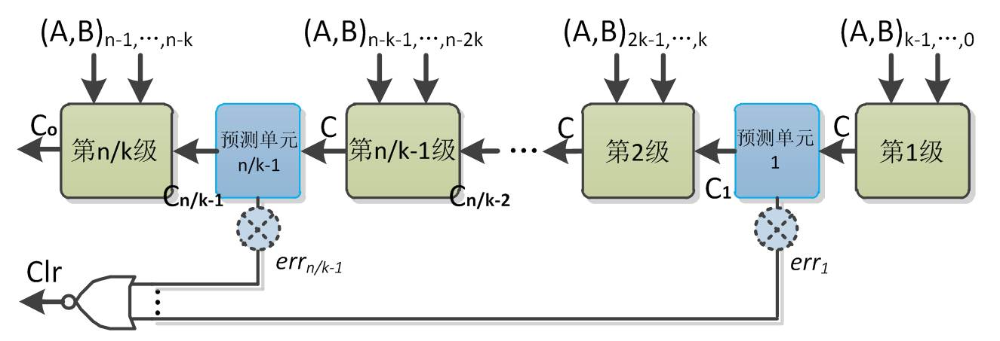
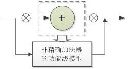
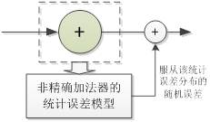
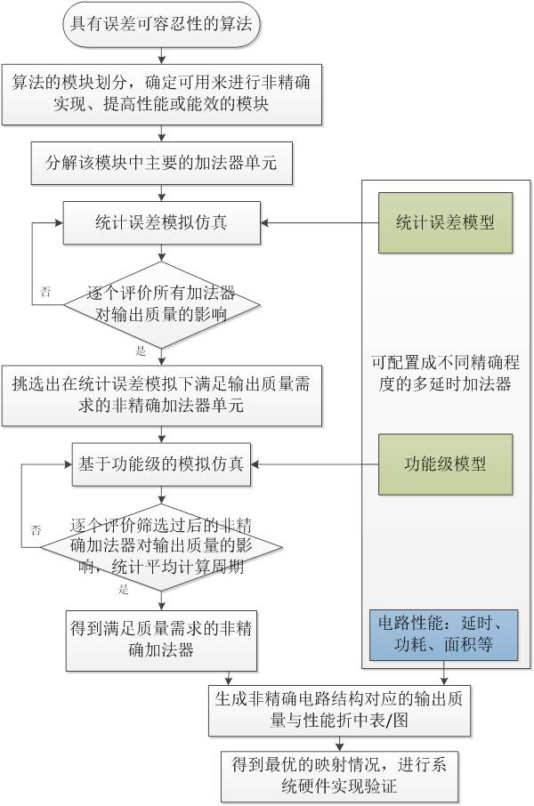

Design Methodology for Approximate Circuits and Systems
based on Configurable Multistage-Latency Adders


Copyright © 2006 - 2014 Fei Qiao, Tsinghua University, Beijing, P.R.C. All rights reserved
Last Update : 2014-09-09
| Chang Liu - Master -2014 |
|
Design Methodology for Approximate Circuits and Systems based on Configurable Multistage-Latency Adders |
| Abstract: |
| With the development of integrated circuit, implementations of various mobile devices and intelligent systems with high performance and low power consumption are more preferable. Scaling of CMOS technology brings the benefits of reducing the energy dissipation as well as saving packaging cost. But it faces the problems in performance loss when further scaling down the supply voltage. Meanwhile designers mostly adopt some conservative approaches such as raising the voltage or reducing the frequency to prevent the faults causing by process variations. It comes performance loss and extra power consumptions. Approximate computing, aiming at maintaining the operating frequency at low power consumptions with a tolerable quality degradation, is emerged of growing interest. Previous works focus on the design of approximate computing elements. While existing design methods are inefficient due to the timing-consuming quality evaluation. Accordingly, development of an efficient design method is much needed, which will also be helpful to the automated design for approximate systems. This research work characterizes multistage speculative adders and presents a fast quality evaluation approach based on statistical error simulations, thus proposing an efficient design methodology for approximate circuit based system design. To validate the methodology, support vector machine (SVM) classification algorithm is analyzed and mapped to a hardware system composed of approximate computing circuits. |
|
|
| Key Point I: The statistical error model of multistage-latency adders |
| Characteristics of multistage speculative adders are fully exploited to construct a statistical error model, thus speeding up the evaluation process. Instead of analyzing the error distribution of adders directly, which may be hard to describe, statistical carry based errors are analyzed to replace the input-dependent error for a fast searching. It is realized by transferring the voltage scaling problem into the frequency increasing issue. |
|  |
|  |
| Key Point II: Design methodology for approximate circuits and systems |
| By utilizing both the statistical error models and the input-dependent functional models, a design approach is proposed for approximate systems that consist of multistage-latency adders. The approach is efficient by speeding up the evaluation process. |
|  |
| Key Point III: Approximate circuit and system design of support vector machine classifier |
| To validate the methodology, support vector machine (SVM) classification algorithm is mapped to a hardware system composed of approximate computing circuits. Compared with the implantation using RCA, improved performance is achieved by relaxing the ＾always correct￣ constraint. The simulations and synthesis results show that the approximate system design achieves 1.57X speedups with 8.56% accuracy degradation. 18.85% area overhead at computing parts can be negligible by amortizing over the entire SVM design. Meanwhile, the proposed method is evaluated from the accuracy and the simulation time as shown below. |
|
|
|
|
|
|
|
|
|
|
| Publications: |
| [1] Liu C, Qiao F, Yang X, et al. Hardware acceleration with pipelined adder for Support Vector Machine classifier[C]//Digital Information and Communication Technology and it's Applications (DICTAP), 2014 Fourth International Conference on. IEEE, 2014: 13-16. |
| [2] Xinghua Yang, Qiao Fei, Chang Liu, and Huazhong Yang. Design of variable latency adder based on present and transitional states prediction[C]. Power and Timing Modeling, Optimization and Simulation (PATMOS), 2013 23rd International Workshop on. IEEE, 2013: 120-125. |
| [3] Xinghua Yang, Fei Qiao, Chang Liu, Qi Wei and Huazhong Yang, "Design of multi-stage latency adders using detection and sequence-dependence between successive calculations," Circuits and Systems (ISCAS), 2014 IEEE International Symposium on, Melbourne VIC, 2014:998-1001. |
| [4] Chang Liu, Xinghua Yang, Fei Qiao, Qi Wei, Huazhong Yang, "Design Methodology for Approximate Accumulator Based on Statistical Error Model," Accepted by ASP-DAC 2014. |
|
Copyright © 2006 - 2014 Fei Qiao, Tsinghua University, Beijing, P.R.C. All rights reserved Last Update : 2014-09-09 |